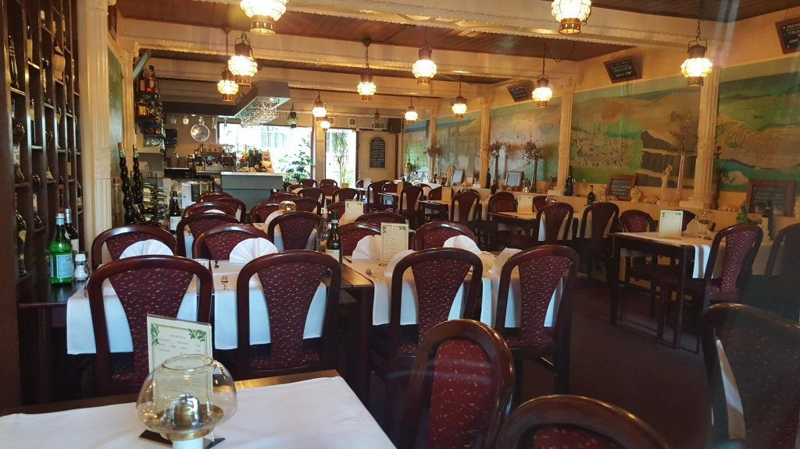
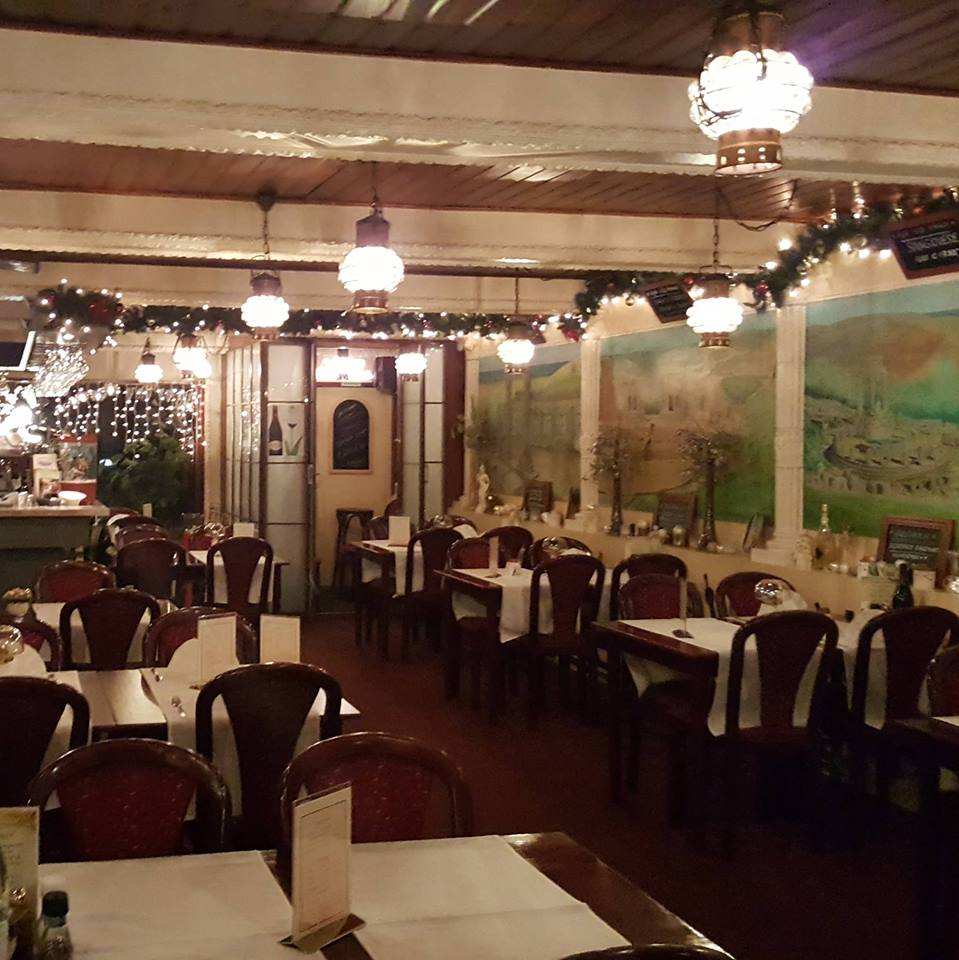
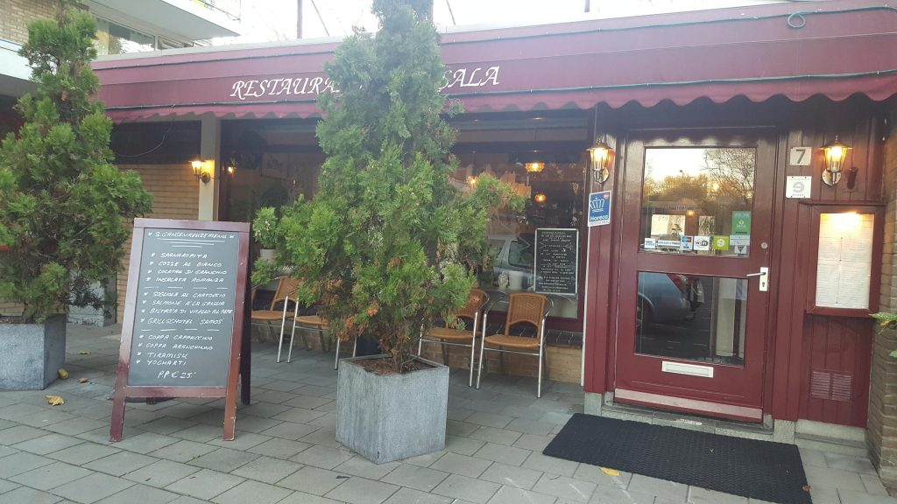
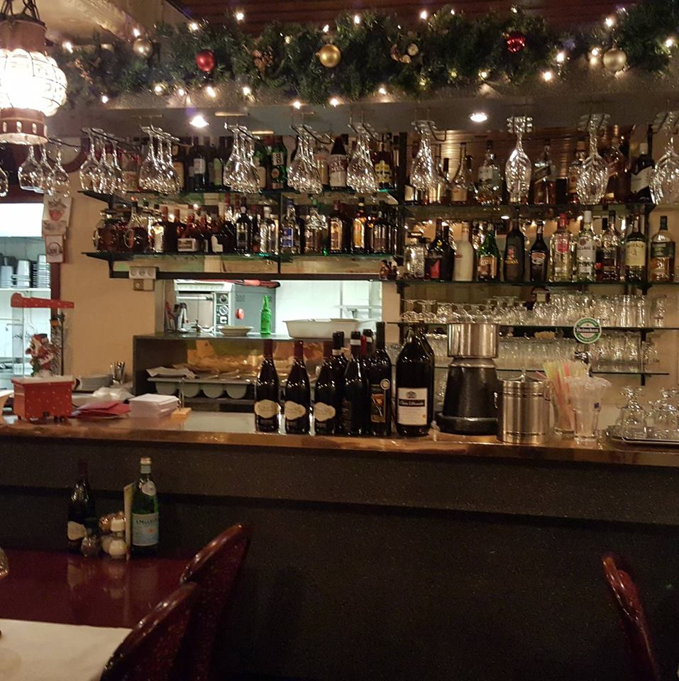
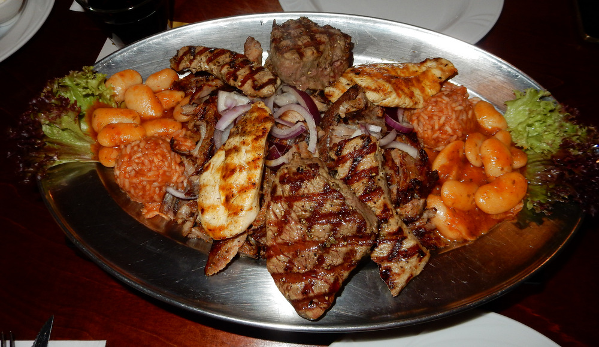

Italiaans & Grieks, sinds 1997 in Schiebroek
Pizza, pasta en Griekse schotels, vers bereid aan de Meidoornhoek.
Een uitgebreide kaart uit de Italiaanse én de Griekse keuken, op traditionele wijze bereid met alleen verse producten. Kom gezellig eten, haal af of laat bezorgen.
Liever thuis? Bestel online via marsala-online.nl

- ma
- digesloten
- wo
- do
- vr
- za
- zo
Zes dagen per week open, dinsdag altijd gesloten. Tweede Kerstdag (26 december) zijn we gewoon open.
Welkom bij Marsala
Restaurant Marsala heet iedereen van harte welkom in ons gezellige restaurant, dat sinds 1997 bestaat als Italiaans en Grieks specialiteitenrestaurant. U vindt hier een uitgebreide kaart met een ruime keuze uit gerechten uit zowel de Griekse als de Italiaanse keuken. Alle gerechten worden op traditionele wijze bereid, met alleen maar verse producten.
Eigenaar Sunny, zijn vrouw Roos en chef-kok Giovanni heten u van harte welkom.
- Altijd alles vers bereid
- Vriendelijke en snelle bediening
- Een ontspannen avond uit eten
- Op een van de gezelligste locaties van Rotterdam
- Zomers op een zonnig terras



De kaart
Van minestrone en pizza uit de oven tot ossenhaas, gyros en moussaka: 183 gerechten en dranken. Kies een onderdeel of zoek direct op naam.


Kaart en prijzen zoals op onze bestelsite marsala-online.nl. Allergieën of vragen? Bel 010 422 4451.

Afhalen of laten bezorgen
De hele kaart is ook thuis te eten. Bestel online en haal uw bestelling af (meestal binnen 30 minuten klaar), of laat het bezorgen.
Thuisbezorgen via de app is altijd tien procent voordeliger.
Groepen, feesten en catering
Marsala is gespecialiseerd in het organiseren van bijeenkomsten voor bedrijven, particuliere feesten en recepties. We verwelkomen groepen tot vijftig personen.
Geeft u liever thuis een feestje? Dan zorgt Marsala voor de gehele catering.
Vraag naar de mogelijkheden- tot 50gasten in het restaurant
- Bedrijvenbijeenkomsten en recepties
- Thuiscatering voor uw eigen feest
Reserveren & contact
Voor reserveringen, bestellingen of informatie zijn we altijd makkelijk te bereiken via telefoon, e-mail of het formulier hieronder.
- Bellen
- 010 422 4451
- Mailen
- info@restaurantmarsala.nl
- Adres
- Meidoornhoek 7
3053 BA Rotterdam (Schiebroek) - Open
- Zes dagen per week, vanaf de middag tot in de avond. Dinsdag altijd gesloten. Tweede Kerstdag (26 december) gewoon open. Voor de precieze tijden: bel ons even.